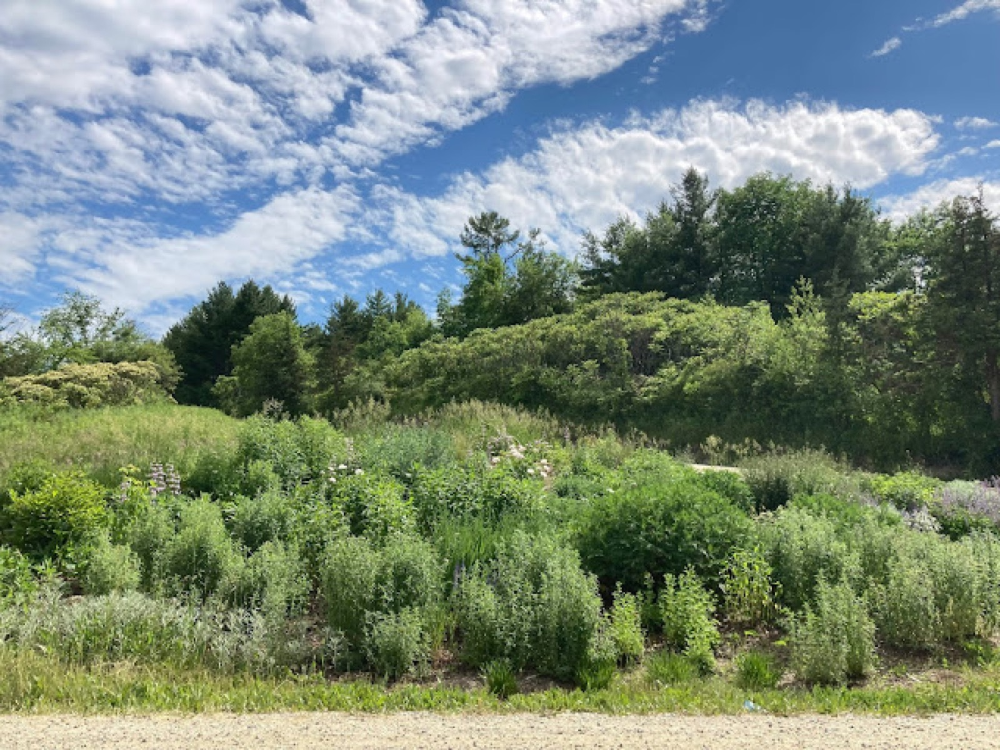
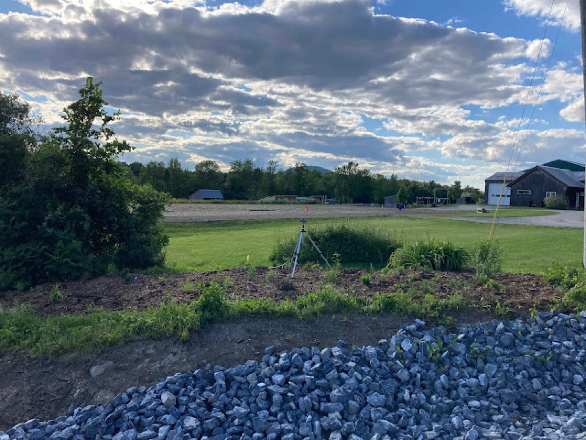
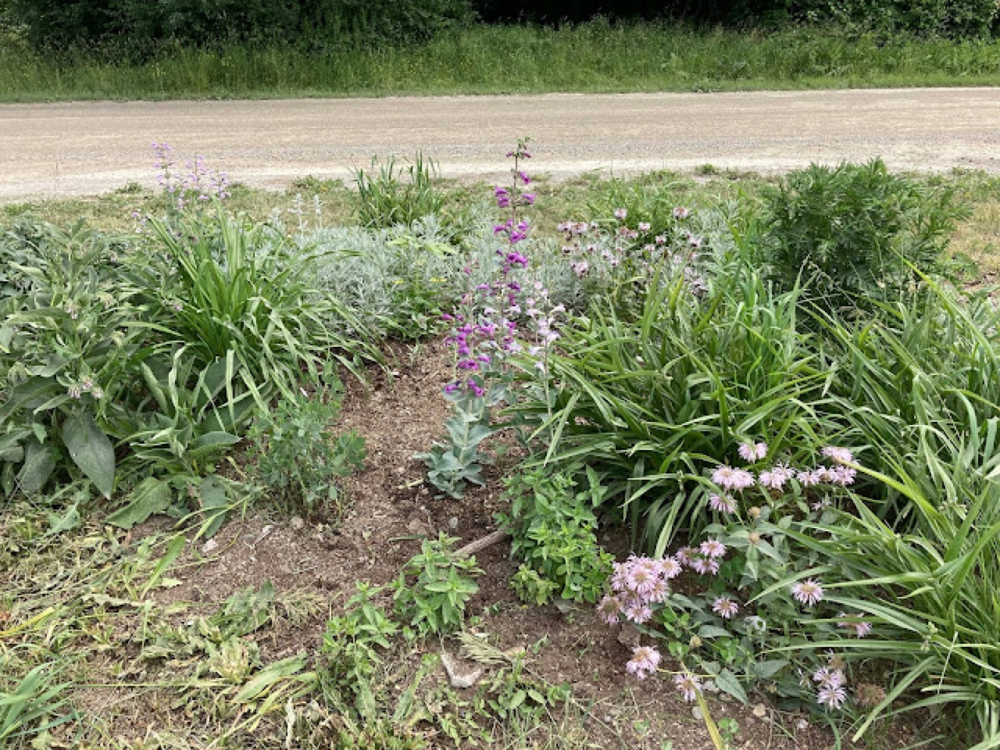
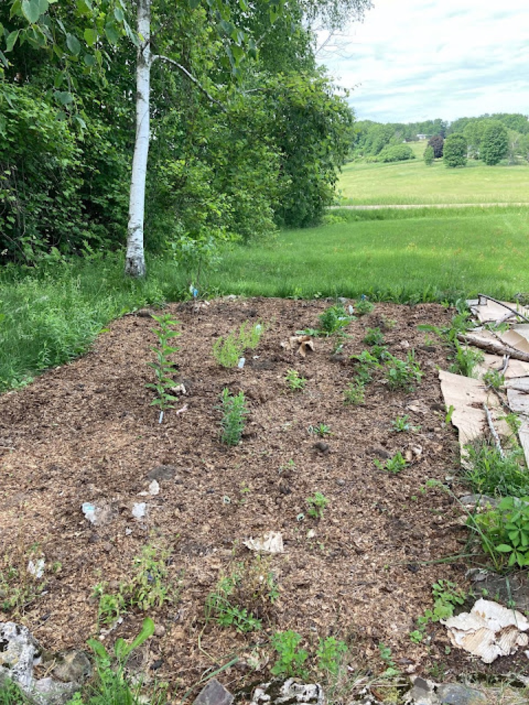

Summer has begun and the gardens of the Lewis Creek loop have exchanged their spring blooms for summer color. As I write this post, Pollinator Week 2021 has also begun! I’m on the lookout for many types of butterflies and moths native to our area of Vermont and the endangered Monarch. The Eastern Swallowtail, Cabbage Whites, American Lady, Large Heath, Milbert’s tortoiseshell, black swallowtail, and the Mourning Cloak have all been spotted at or around these garden sites. I have seen four Monarchs in various places, three in this area.
Now officially in summer, each garden is experiencing celebrations and challenges. Here are a few images of each of the gardens on this 4.5 mile loop in Charlotte and Monkton, Vermont.
The Butterfly Garden at the Quinlan Bridge Charlotte, Vermont

The Butterfly Garden at the Quinlan Bridge no longer needs heavy watering, however plant divisions are going to become very important soon as everything is pretty close together. Overall, the garden is looking particularly lovely with four varieties of milkweed, penstemon, yarrow, speedwell, early bee balm, and more. Noted pollinators include a ruby-throated hummingbird.
The Pollinator Garden at Fair Winds Farm Monkton, Vermont

The Pollinator Garden at the corner of Hand road and Covered Bridge road in Monkton is much larger than originally planned. The garden is extremely visible, well-watered, and in need of 10 – 15 more large plants. Friends and clients of Fair Wind Farm have generously donated plants from their own gardens, purchased plants, and spent time weeding this giant garden bed. Featured pollinators include the eastern swallowtail.
The Pollinator Garden at Rotax and Roscoe Monkton, Vermont

The R&R Garden is three times the size we originally intended— collectively we spread cardboard, moved aged manure, and planted a collection of plants that will be quite stunning once they reach maturity. We have several false indigo growing, New Jersey Tea, early bee balm, culver’s root and more growing in this rather small space. I observed my first Monarch (just two weeks ago, early June 2021) while tending this garden.
The Friendship Garden at Quaker’s Corners Charlotte, Vermont

This garden is a hidden gem. The friendship garden is stocked with a variety of plants, including buttonbush, New Jersey Tea, liatris, New York Ironweed, and so much more— this garden receives some dappled shade from two white birches which has been beneficial during some hot spells we experienced mid to late Spring 2021. Later this year we look forward to filling in the remaining half of the garden to plant 15 additional native plants. The field visible from this garden is a known for seeing Monarchs, turkey families, and deer.